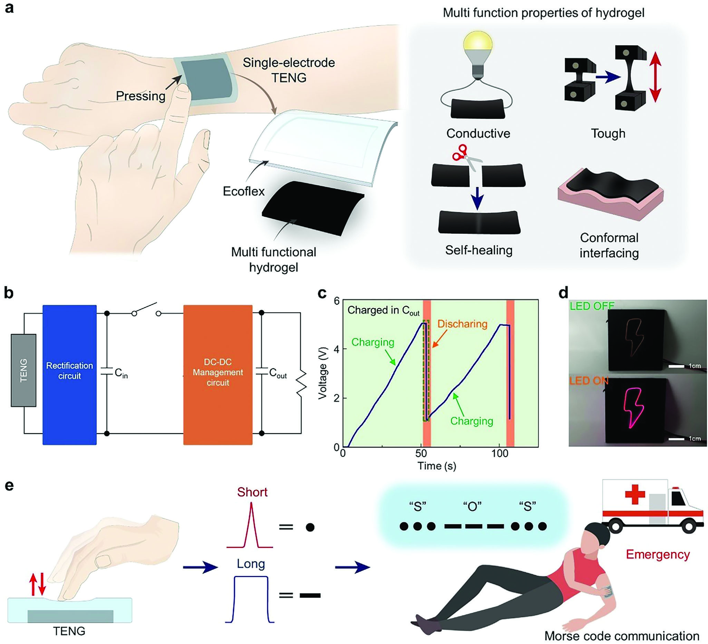

이 연구가 다루는 문제
하이드로젤 전극과 엘라스토머 마찰층으로 움직임을 전기로 바꾸고, 전력 관리 회로를 통해 그 에너지를 저장하는 연구입니다. 같은 축전기를 일정 시간 충전한 비교에서 전력 관리 회로를 썼을 때 더 많은 에너지가 저장됐습니다.
연구가 시작된 배경
마찰전기 발전기는 움직임을 전기로 바꾸지만, 높은 개방회로 전압만으로 기기에 전달되는 실제 에너지를 알 수는 없습니다. 낮은 주파수의 움직임과 높은 임피던스 때문에 에너지의 저장·전달 방식이 중요합니다. 이 연구는 유연한 발전기에 전력 관리 회로를 결합했습니다.
어떻게 접근했나요?
하이드로겔 전극과 Ecoflex 층이 유연한 발전기를 이룹니다. 작은 임시 커패시터에 에너지를 모은 뒤, 정해진 문턱에 도달하면 스위칭을 통해 변환 회로와 출력 저장부로 전달합니다. 하이드로겔의 회복과 에너지 전달 제어는 시스템의 서로 다른 문제를 다룹니다.

다기능 하이드로겔–엘라스토머 마찰전기 발전기와 에너지 저장 회로, 발광소자 및 모스 부호 시연을 정리합니다.
Jinseok Oh, Minkyong Kang, Jae Park 외. “Autonomously Self‐healing, Adhesive, and Stretchable Triboelectric Nanogenerator Using Multifunctional Hydrogel‐Elastomer Double Layer with a Power Management Circuit”. Figure 1. DOI: 10.1002/aelm.202400013. CC BY 4.0. 그림 내용은 변경하지 않았습니다.
무엇을 어떻게 평가했나요?
출력은 움직임과 부하 조건을, 저장 에너지는 커패시터 용량과 충전 시간을 맞춰 비교해야 합니다. 논문은 직접 충전과 전력 관리 회로를 거친 충전을 구분합니다. LED와 터치·모스 부호 시연은 활용 가능성을 보여 주지만, 모든 연속 작동 기기의 에너지 수지를 확인한 결과는 아닙니다. 접착과 계면은 돼지 피부 등에서 평가했고, 착용 시연에서는 VHB 필름이 피부에 직접 닿도록 구성했습니다.
주요 결과
같은 100 µF 커패시터를 1분간 충전했을 때 저장 에너지는 직접 충전에서 1.06 µJ, 전력 관리 회로 사용 시 2.93 µJ 증가했습니다. 해당 부하와 시간에서 에너지 수집이 개선되었다는 결과입니다. 최대 개방회로 전압이나 시스템 전체 효율이 같은 비율로 증가했다는 뜻은 아닙니다.
아직 남아 있는 질문
하이드로겔이 회복되어도 Ecoflex, 배선, 회로까지 모두 복구되었다고 볼 수는 없습니다. 습도와 반복 작동 결과도 시험 조건 안에서 해석해야 합니다. 특정 부하에 사용할 수 있는 에너지와 전체 시스템 손상 후 성능은 더 비교해야 하며, 보편적인 배터리 대체가 입증되지는 않았습니다.
함께 읽을 연구
Ultrastretchable, transparent triboelectric nanogenerator as electronic skin for biomechanical energy harvesting and tactile sensing
Pu 등은 이온성 하이드로겔과 엘라스토머로 신축성 에너지 수집과 터치 감지를 결합합니다. 이 연구는 회복·접착과 전력 관리를 함께 다룹니다.
외부 연구는 초록만 읽었습니다. 구조와 작동 조건이 달라 최대 출력을 직접 비교할 수 없습니다.
초록을 참고한 소개해설에 사용한 자료
앞서 읽은 공개 Wiley 본문과 전력 관리 부분을 바탕으로, 보관된 게재본 PDF 11쪽의 본문·그림·실험 방법·참고문헌 목록까지 검토 범위를 넓혔습니다. 보충자료와 영상은 직접 검토하지 않았으며, 최신 출판사 판본과 정정 여부도 추가 확인이 필요합니다.